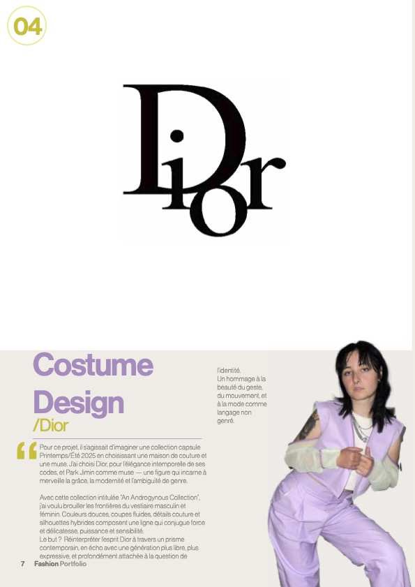
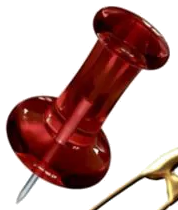

the designer behind it
About Laura.
Hover a folder tab below — a photo lifts up from the stack like you're peeking underneath a page. Click to flip the whole spread.
Selected Work.


Dior Costume Design
The pushpin is the hotspot — click it to pop up project detail, exactly like unpinning a note.
Services.
Costume design, creative direction, styling and bespoke commission work — arranged like a page freshly flipped into view.
Inquiries.
For commissions and collaboration requests — reach out any time.